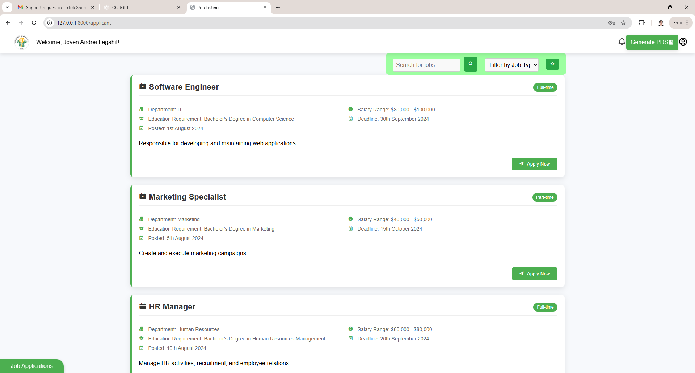
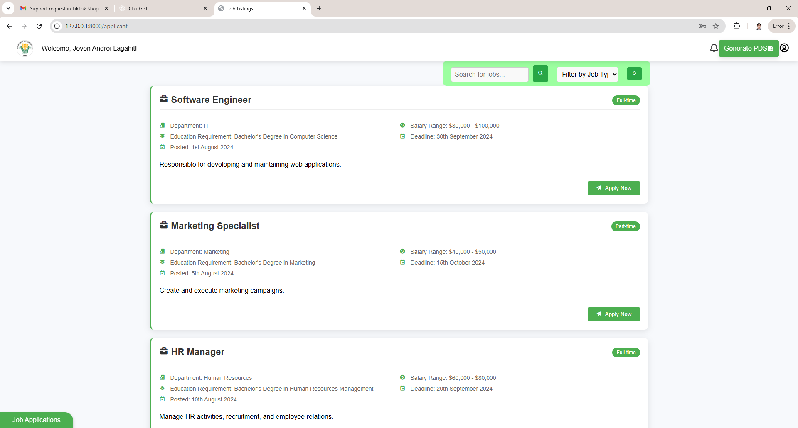

Multi-Tenant Crop Farm Management System
A scalable system supporting multiple user types in the agriculture sector with AI-driven crop analysis and real-time weather forecasting.
"This system revolutionized how we manage our farm operations."
"The analytics provided insights we never had before."
"User-friendly interface with powerful features."


Payroll System
A reliable payroll system for accurate employee compensation with automated salary computation, tax deductions, and leave balances.
"Streamlined our payroll process significantly."
"Accurate calculations and easy to use."
"Reduced payroll processing time by 60%."


 



Integrated HRIS
A unified HR platform supporting multi-type payroll processing, fingerprint biometric attendance tracking, and job portal with automatic PDS generation.
"Comprehensive solution for all HR needs."
"Biometric integration improved accuracy."
"Recruitment portal made hiring so much easier."